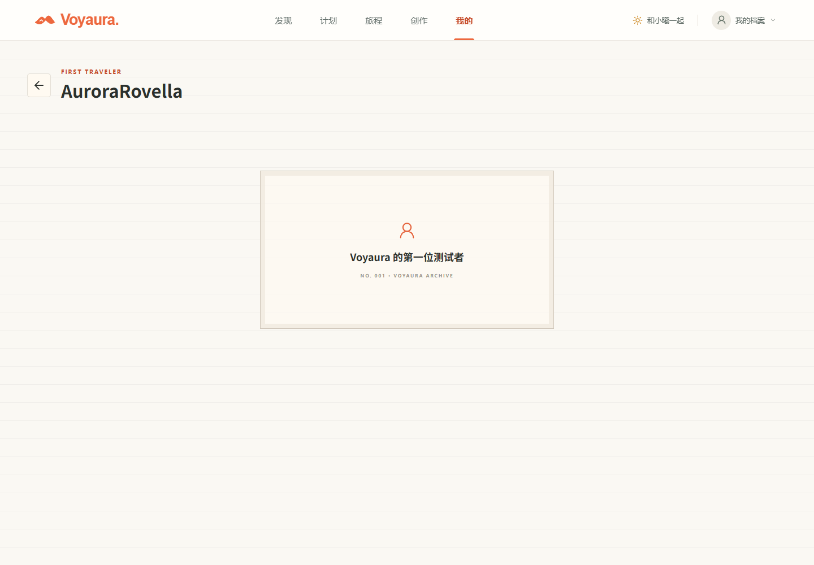
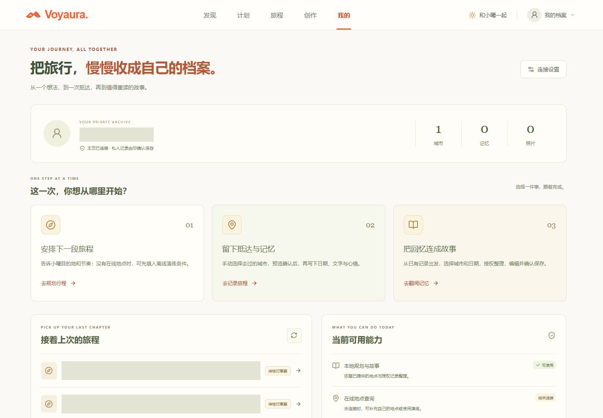
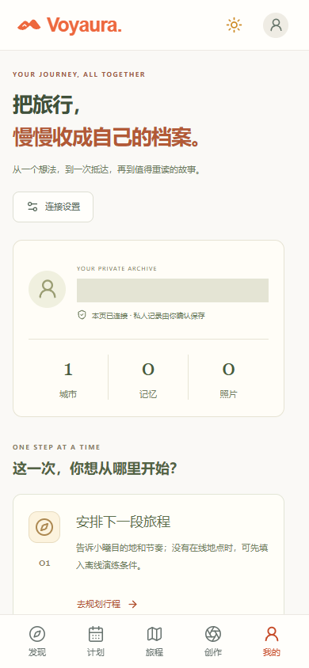
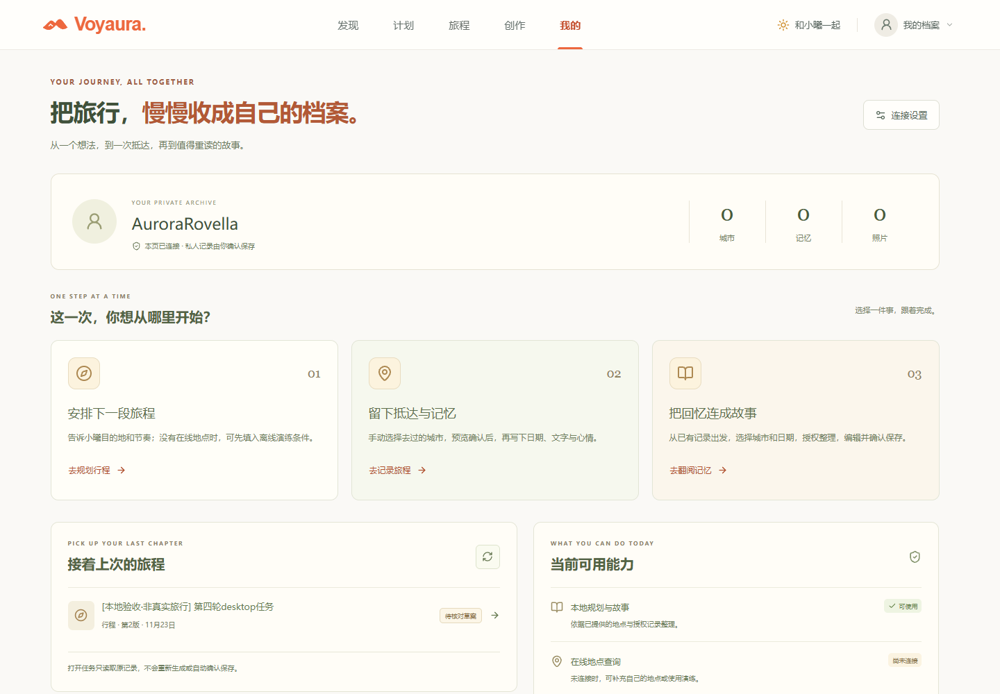
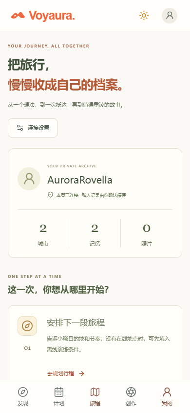

桌面 · 1440 × 1000


第四轮“全流程体验与参赛演示打磨”已直接实施：档案总览、使用引导、历史恢复、登录返回与编辑保护。
80 项前端测试 · 18 项真实浏览器验收 · 4 种屏宽 · 生产构建通过选择安排下一段旅程／留下抵达与记忆／把回忆连成故事，按引导进入实际页面。已连接时，可以在最近任务中直接打开原始结果和版本。
直接打开私人链接，验证后回到原城市与日期。编辑后离开，选择继续编辑即可保留文字；主动放弃后才离开。下面的截图按钮仅换图，实际交互请打开产品地址。
当前服务只读截图。灰色遮盖用于保护私人身份与任务文字，实际页面会显示自己的资料。前后对照的旧页为原占位实现。



访客页面、登录返回、原任务恢复和编辑保护均在真实HTTP与数据库上验证。这里的截图切换不会创建或保存任务。

